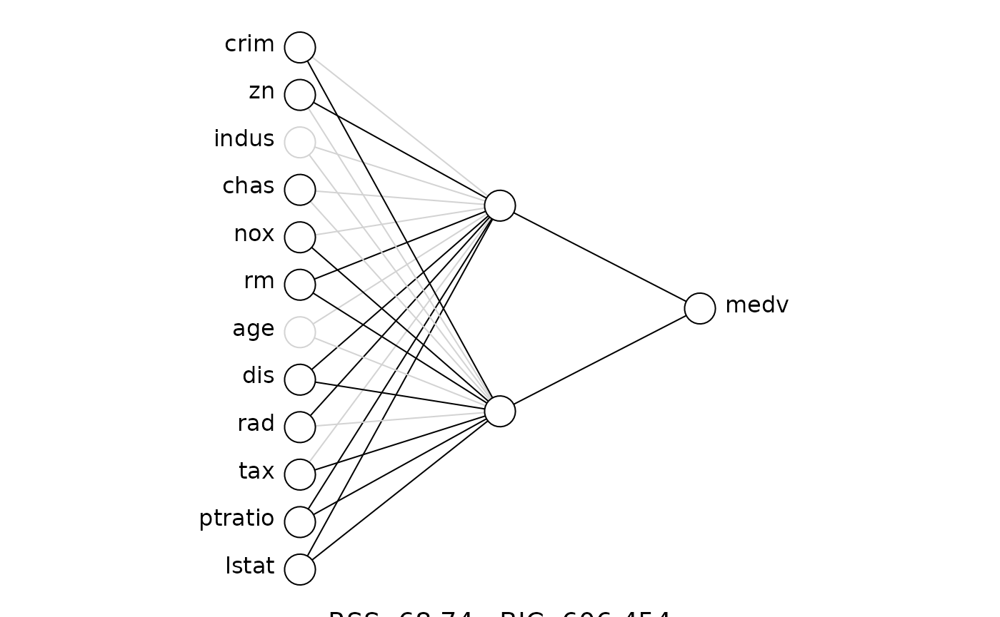

To begin, load the statnn package.
Also, load the package that we will use to fit the neural network.
Our package works with a number of popular R packages for neural
networks, and here we will use the nnet package.
Now, load the data.
# load data ---------------------------------------------------------------
data(Boston)Next, we fit a neural network. We will fit a neural network on the
respose variable, medv, using all covariates and with two
hidden nodes. As neural networks require random initial weights to begin
learning, we use set.seed() for reproducibility.
set.seed(100)
nn <- nnet(medv ~ ., data = Boston, size = 2, trace = FALSE,
linout = TRUE, maxit = 1000)We can then create a statnn object
A useful summary table can then be produced using the
summary() function
summary(stnn)
#> Call (statnn):
#> statnn.nnet(object = ..1, X = ..2)
#>
#> Number of input nodes: 12
#> Number of hidden nodes: 2
#>
#> BIC: 606.4537
#>
#> Coefficients:
#> Wald
#> Estimate Std. Error | X^2 Pr(> X^2)
#> crim -0.50367 0.080639 | 15.86103 3.60e-04 ***
#> zn 0.89640 0.084741 | 7.13194 2.83e-02 *
#> indus -0.85112 0.074677 | 0.10822 9.47e-01
#> chas 0.71421 0.199555 | 8.12925 1.72e-02 *
#> nox -0.71383 0.080419 | 16.20045 3.03e-04 ***
#> rm 0.94949 0.071141 | 102.72926 0.00e+00 ***
#> age -0.70553 0.079025 | 1.54725 4.61e-01
#> dis 0.58585 0.089845 | 39.16725 3.13e-09 ***
#> rad -0.48035 0.089325 | 41.56443 9.43e-10 ***
#> tax -0.76588 0.083371 | 10.40137 5.51e-03 **
#> ptratio -0.93611 0.071849 | 19.46303 5.94e-05 ***
#> lstat -1.27902 0.061575 | 59.52595 1.19e-13 ***
#> ---
#> Signif. codes: 0 '***' 0.001 '**' 0.01 '*' 0.05 '.' 0.1 ' ' 1
#>
#> Weights:
#> b0->h11 crim->h11 zn->h11 indus->h11 chas->h11 nox->h11
#> -2.19 -0.14 0.13 -0.03 0.06 0.15
#> rm->h11 age->h11 dis->h11 rad->h11 tax->h11 ptratio->h11
#> 0.74 -0.05 -0.35 0.99 -0.13 -0.16
#> lstat->h11 b0->h12 crim->h12 zn->h12 indus->h12 chas->h12
#> -1.38 6.58 -0.52 10.13 0.00 0.12
#> nox->h12 rm->h12 age->h12 dis->h12 rad->h12 tax->h12
#> -1.42 -0.88 -0.20 -1.85 0.31 -1.14
#> ptratio->h12 lstat->h12 b1->y h11->y h12->y
#> -0.66 -0.69 -1.83 3.61 1.50This tells provides us with simple point estimates of the effects, and the results from the multiple-parameter Wald test for each input.
We can visualise the covariate effects and their associated
uncertainty using the plot() function, which creates
Partial Covariate Effect (PCE) plots.
There is also a plotnn() function that visualise the
significance of each weight from the single-parameter Wald test.
plotnn(stnn)